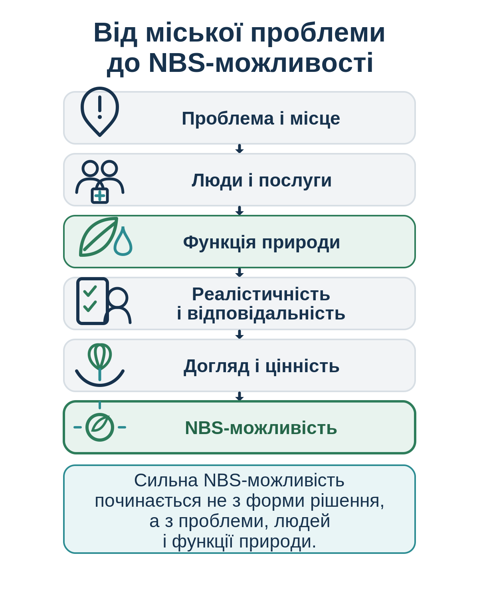

Після сильної зливи вода збирається біля входу до школи. Діти й батьки обходять калюжу дорогою частиною. Комунальна служба відкачує воду, але після наступної зливи проблема повертається.
Команда може одразу запропонувати більшу трубу або ще один водоприймач. Але варто поставити просте запитання: чи можна дати воді місце, де вона сповільниться, частково увійде в ґрунт і не перекриватиме безпечний маршрут?
Так починається логіка природоорієнтованого рішення: не з красивої форми, а з конкретної проблеми, місця, людей і функції природи.
Природоорієнтоване рішення використовує природний процес або природний елемент, щоб зменшити конкретну міську проблему.

| Ознака | Декоративний або неповний підхід | NBS-підхід |
|---|---|---|
| Початок | Обираємо форму або зовнішній вигляд. | Визначаємо конкретну міську проблему. |
| Функція природи | Не пояснена. | Зрозуміло, що саме робить природний елемент. |
| Користь | Загальна: «стане зеленіше». | Пов’язана з людьми, послугою або ризиком. |
| Управління | Немає відповідального й плану догляду. | Є відповідальність, координація і догляд. |
Одна NBS-можливість може створити кілька видів цінності. Це не обіцянка результату, а запитання для команди.
- Проблема і місце
Яка конкретна проблема існує? Де вона проявляється найчіткіше?
Вода накопичується біля входу до школи. - Люди і послуги
Хто відчуває проблему? Яка міська послуга або функція пов’язана з нею?
- Функція природи
Що саме має робити природний елемент?
- Реалістичність і відповідальність
Хто має бути залучений? Що потрібно перевірити до рішення?
- Догляд і цінність
Хто підтримуватиме рішення? Яку зміну команда очікує побачити?
Дощовий сад біля школи
Проблема: після зливи вода перекриває вхід. Природна функція: заглиблена озеленена ділянка приймає й сповільнює частину стоку. Користь: безпечніший маршрут і менше стоячої води. Відповідальність: школа та міські служби мають домовитися про догляд.
Не починайте з назви рішення. Спочатку оберіть одну проблему і одне місце.
Картка допомагає підготувати першу змістовну розмову з командою.
Поверніться до своєї картки й дайте короткі відповіді:
- Яку проблему Ви обрали?
- Яка природна функція може допомогти?
- Що потрібно перевірити перед розмовою з командою?
- Хто має бути залучений?
- Який перший невеликий крок можна зробити?
Перед подальшим опрацюванням перевірте найслабше припущення у Вашій ідеї.
Наступне заняття →